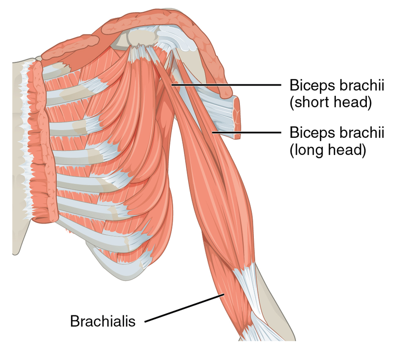
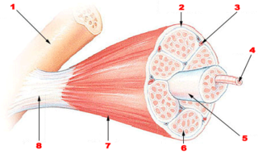

Na mišiću se može razlikovati tijelo ili glava mišića i dva suženja koja se nastavljaju u tetive. Neki mišići imaju dvije glave, koje su na jednoj strani spojene i zajedničkom tetivom vezane za kost, a na drugoj strani razdvojene i vezane za različite kosti posebnim tetivama. Ovakvi mišići nazivaju se dvoglavi (biceps); Takav mišić imamo na prednjoj strani nadlaktice. Postoje i troglav (triceps) i četvoroglavi (kvadriceps).
|  | Na slici je prikazan biceps. Mogu se vidjeti 2 glave, short head (kratka glava) i long head (duga glava). Tetivama su spojene sa kostima (Izvor: Wikipedia) |
Skeletni mišići razlikuju se po veličini i obliku. Mogu biti mali, kao što su mišići koji pokreću oko ili veliki, kao što je široki leđni mišić.
Najsnažniji mišići nalaze se na leđima, oko kičme; oni održavaju uspravan stav. Najbrojniji su mišići vretenastog oblika, ali mogu biti i lepezasti, trakasti, pločasti ili kružni.
Skeletni mišić sastoji se od snopova mišićnih vlakana, koja su postavljena paralelno i obavijena tankom vezivnom membranom, gradjeći primarni snop. Više takvih snopova gradi snop višeg reda, takođe obavijen membranom. Sjedinjavanjem svih snopova višeg reda formira se mišić, koji spolja ima vezivni omotač. Ovaj vezivni omotač na krajevima mišića obrazuje tetive, kojima su mišići vezani za kosti.
Između snopova vlakana u mišiću nalazi se rastresito vezivno tkivo kroz koje prolaze krvni sudovi i nervi. Do svakog mišićnog vlakna dolaze nervni završeci kroz koje stižu impulsi., tj. "komande" za rad mišića. Kontrakciju mišića omogućava prisustvo proteinskih struktura-miofibrila u svakom mišićnom vlaknu. Miofibrili su napravljeni od bjelančevina miozina i aktina. Njihove niti postavljene su paralelno i klizeći jedne preko drugih izazivaju skraćenje miofibrila, tj. mišića.
|  | 1-kost, 2-perimizijum, 3-krvni sud, 4-vlakno, 5-snop, 6-endomizijum, 7-epimizijum, 8-tetiva (Izvor: Wikipedia) |
Ako mišić opteretimo nekom silom u uzdužnom pravcu, on će se istegnuti. Na primjer, kada nosiš torbu u ruci, mišići ruke se istežu. Kada prestane da djeluje, mišić se vraća u prvobitni položaj. Ova osobina se zove elastičnost.
Važna odlika mišića je osjetljivost na draž, tj. nadražljivost. Pod uticajem draži, mišićne ćelije se skraćuju, a mišić se grči i nabrekne. Ova osobina mišića zove se kontraktilnost. Kontrakcije mišića izazivaju nervni impulsi, koji do mišićnih ćelija dolaze nervnim vlaknima iz mozga. Pod uticajem nervnog impulsa miofibrili u mišićnim vlaknima se skraćuju, mišić se kontrahuje. Kada nervni impulsi prestanu da pristižu, mišić se relaksira. Svaku mišićnu ćeliju dodiruje po jedan nervni završetak. Ovo mjesto spajanja naziva se nervno-mišićna sinapsa ili motorna ploča.
Čak i kada tijelo miruje, svi mišići su u stanju napetosti; ova prirodna mišićna napetost naziva se mišićni tonus.